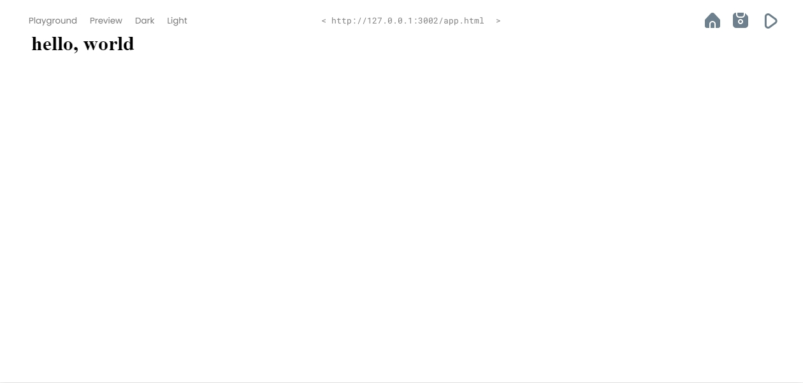

Live preview
When developing a web page. live preview is the real time view of how a web page looks. OwO provides a
live preview that allows the developer to see their project as it would appear if published, updated
live as they make changes. Preview your changes in the browser with instant reloads.

Dark theam
A dark theme displays dark surfaces across the majority of a UI. It's designed to be a supplemental
mode. Dark themes reduce the luminance emitted by device screens, while still meeting minimum color
contrast ratios.
available in light theam also